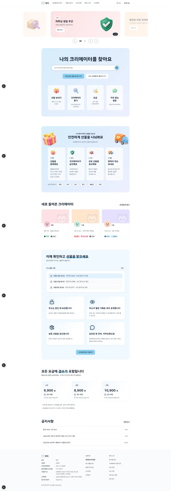
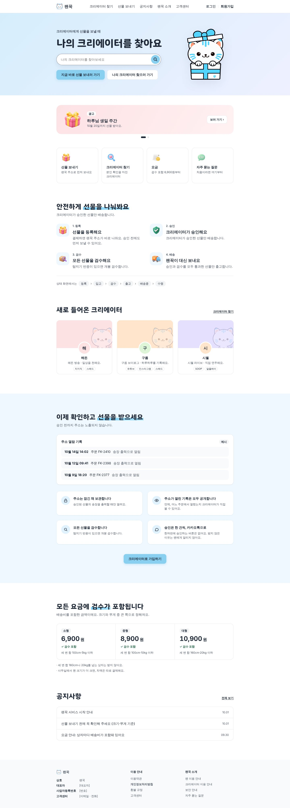

v29 랜딩 다듬기 — 지금 / 고친 화면
글 폭 880 은 그대로 두고, 휑하고 어색해 보이던 원인 다섯 가지를 고쳤어요. 고친 화면을 직접 보려면 index.html 을 여세요.
- 배경 띠를 화면 끝까지 — 첫 화면 그라데이션과 약속 구간 하늘색이 양옆까지 찬다. 광고 배너는 880 선 안
- 하늘 판은 약속 구간 하나만 — 4단계·바로가기는 흰 바탕
- 판 안 카드 넷 → 4단계는 2×2(그림 + 글), 요금은 한 장을 셋으로 나눔
- 구간 제목은 모두 왼쪽 한 선, 버튼만 가운데
- 첫 화면에 서비스 문장·검색·마스코트를 먼저, 광고 배너는 그 아래
지금 (보내 주신 화면)
고친 화면 (1440 폭)